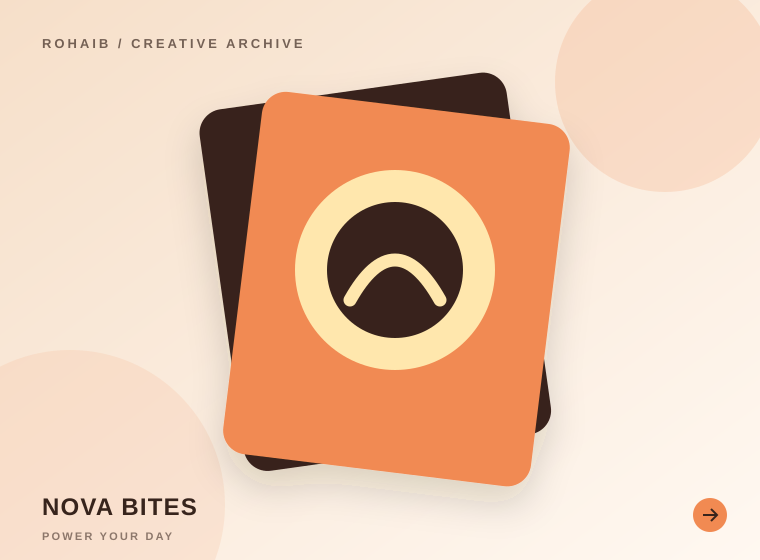
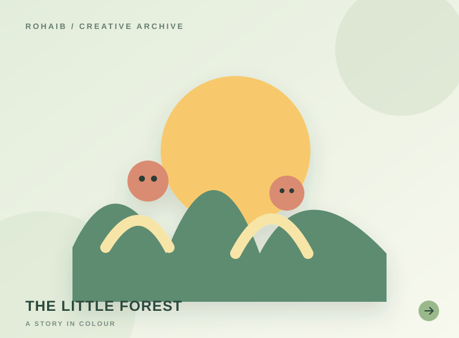
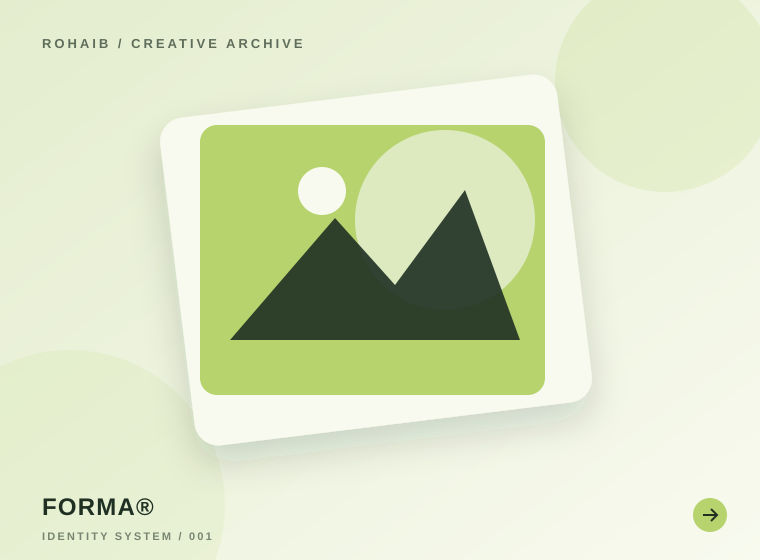
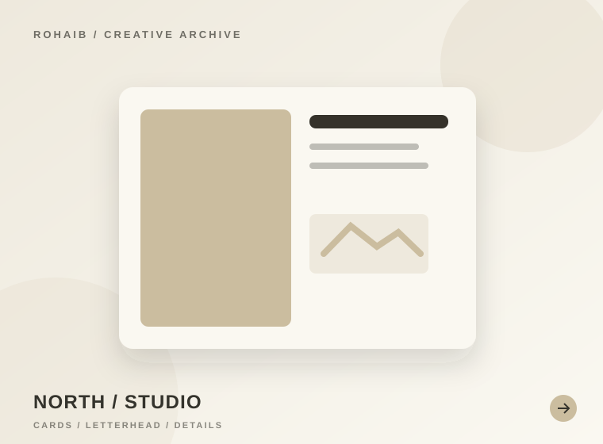
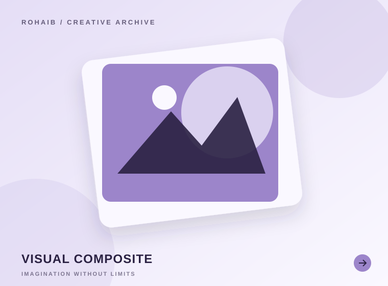
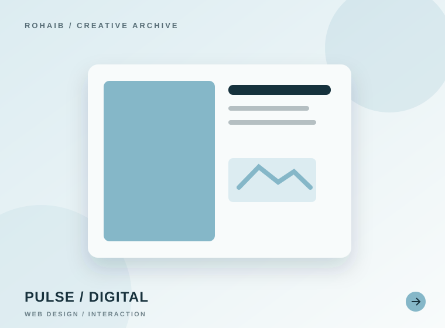
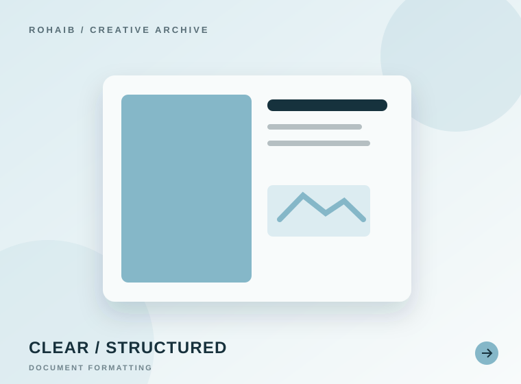

THE WORK / A VISUAL JOURNALA collection of
A collection of
creative directions.
A growing collection of visual experiments, concept projects and creative explorations across design, image-making, video and digital.
SELECT A CATEGORY BELOW ↓
BRANDING↗
ILLUSTRATION↗ VIDEO↗
VIDEO↗
BRANDING↗ PRINT↗
PRINT↗ SOCIAL↗
SOCIAL↗
PRINT↗
PHOTO↗
WEB↗ AI↗
AI↗ PHOTO↗
PHOTO↗
DOCUMENTS↗Portfolio visuals shown here are editable concept mockups and placeholders. Replace them with finished work as projects are completed.